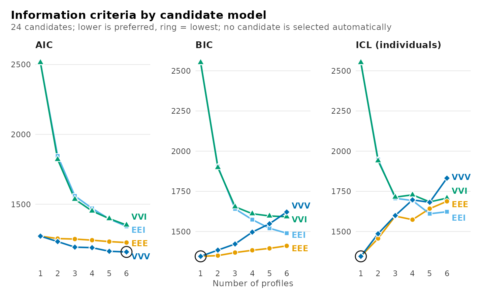
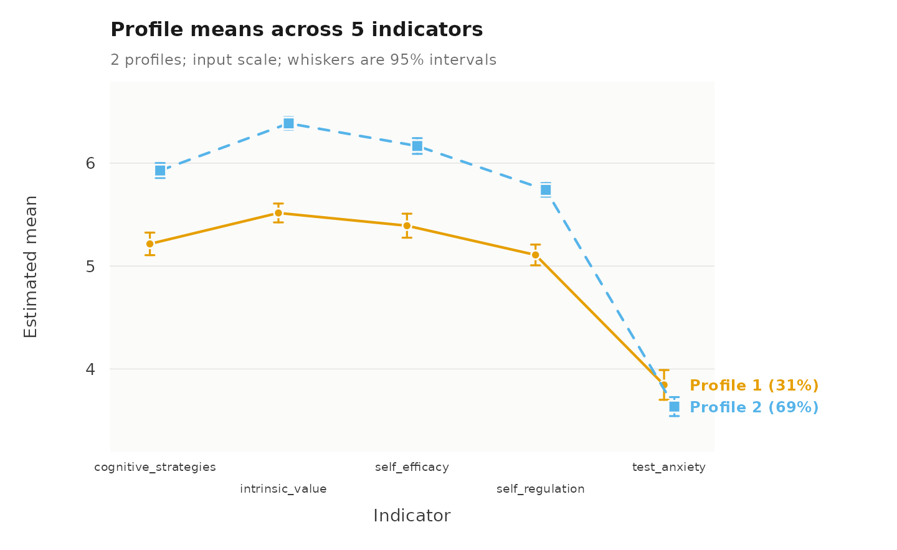
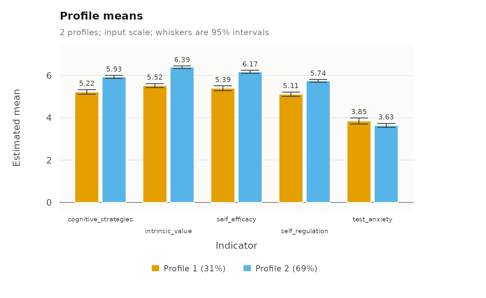
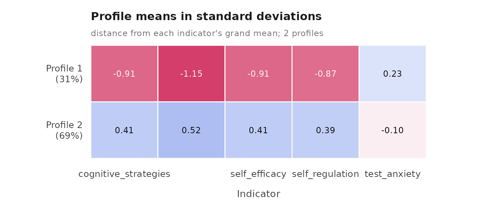
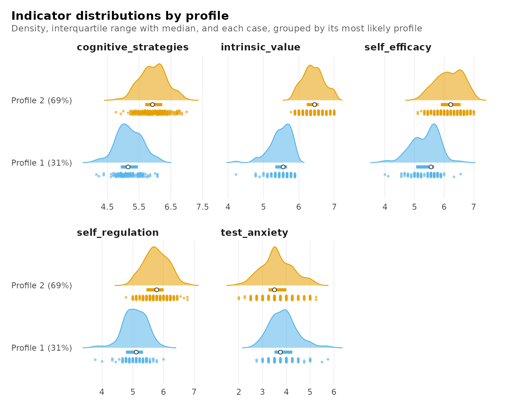
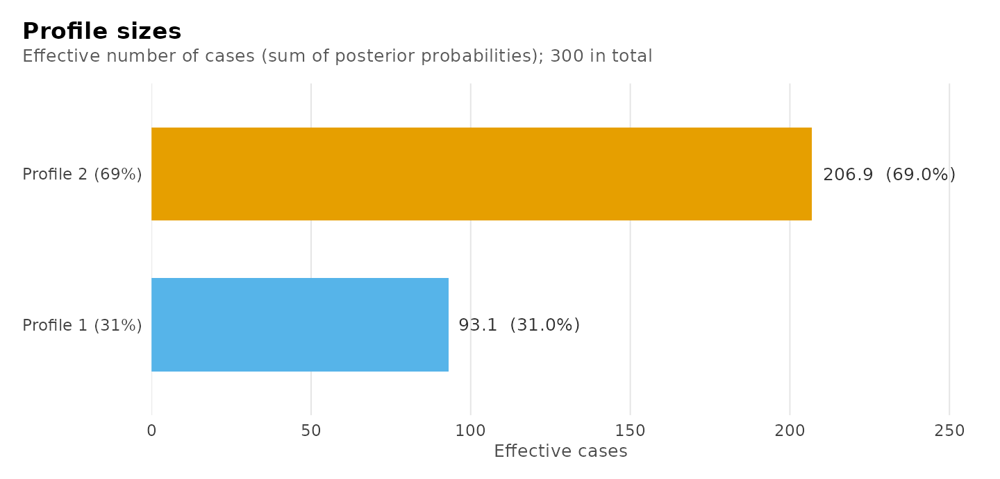
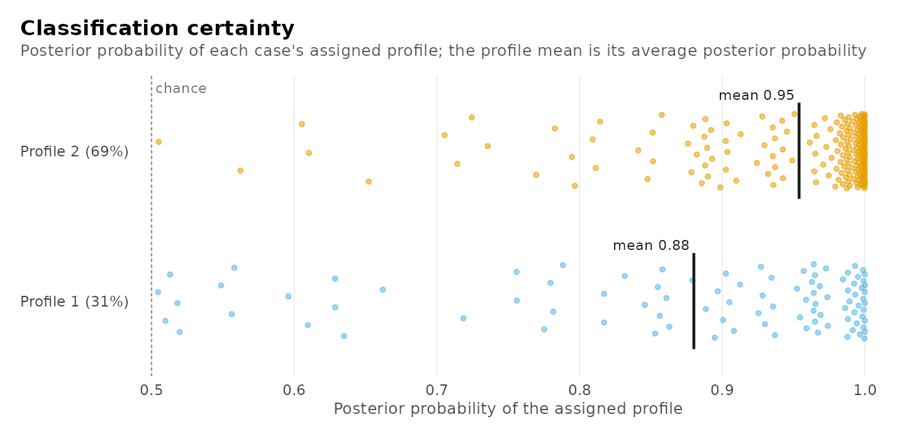
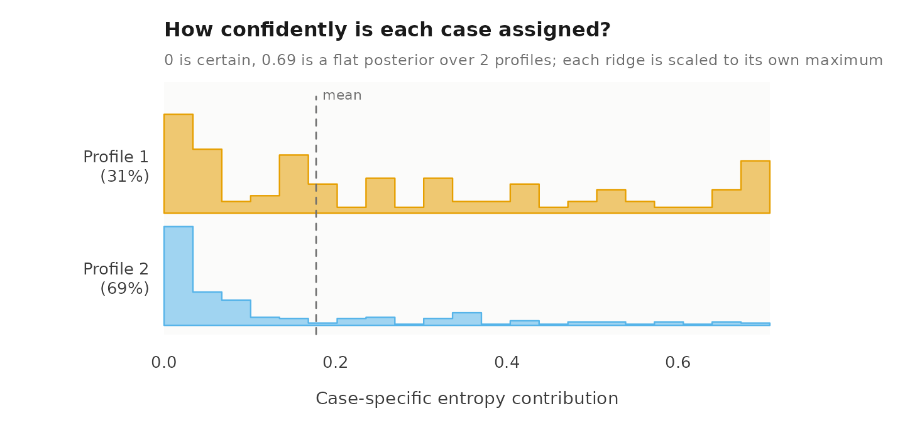
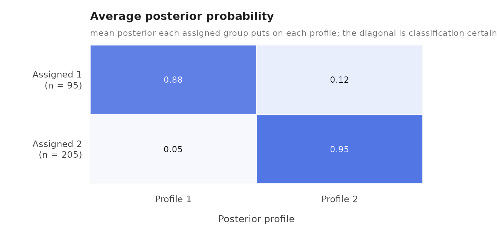

Latent profile analysis: a complete workflow
Written by Mohammed Saqr and Sonsoles López-Pernas
Source:vignettes/workflow-lpa.Rmd
workflow-lpa.RmdLatent profile analysis (LPA) is a mixture model for continuous indicators. It assumes that the observations come from a small number of unobserved subpopulations, called profiles, each with its own mean on every indicator. This vignette presents a complete analysis: description of the data, selection of the covariance structure and the number of profiles, estimation, interpretation, and evaluation of the classification.
The estimation uses random starting values, so the seed is set once to make the results reproducible.
Data
The srl data contain the scores of 300 respondents on
five constructs of the Motivated Strategies for Learning Questionnaire:
cognitive strategy use, intrinsic value, self-efficacy, self-regulation,
and test anxiety. Each score is the mean of the construct’s items on a
scale from 1 to 7. The responses were generated by a large language
model (GPT) in a study of how such models answer psychological surveys;
they serve here as a well-structured example and are not evidence about
students.
indicators <- c("cognitive_strategies", "intrinsic_value", "self_efficacy",
"self_regulation", "test_anxiety")
descriptives(srl, indicators)
#> variable n n_missing mean sd min max n_distinct
#> 1 cognitive_strategies 300 0 5.71 0.541 4.15 7.00 34
#> 2 intrinsic_value 300 0 6.12 0.523 4.22 7.00 22
#> 3 self_efficacy 300 0 5.93 0.587 4.00 7.00 25
#> 4 self_regulation 300 0 5.54 0.500 3.78 6.78 25
#> 5 test_anxiety 300 0 3.70 0.644 2.00 5.75 16Selecting the covariance structure and the number of profiles
A latent profile model must specify, besides the number of profiles,
how the indicators vary within a profile: whether the variances are
equal across profiles or differ between them, and whether the indicators
are allowed to covary within a profile. The four combinations are named
by the volume, shape and orientation of each profile’s covariance
matrix, each equal (E) or varying (V) across
profiles, with I for no covariances (Celeux and Govaert,
1995): EEI has equal variances and no covariances,
VVI varying variances and no covariances, EEE
one covariance matrix shared by all profiles, and VVV a
covariance matrix for each profile. enumerate_lpa()
estimates these four structures with every number of profiles
requested.
models <- enumerate_lpa(srl, indicators, n_profiles = 1:6)
plot(models)
The choice of structure matters here because four of the five
constructs are strongly correlated. The structures without covariances
(EEI, VVI) can reproduce these correlations
only by adding profiles, and their BIC continues to fall up to six
profiles. The structures with covariances account for the correlations
directly, and reach far lower BIC values with one or two profiles. The
EEE structure attains the lowest values; its candidates
are:
summary(enumerate_lpa(srl, indicators, n_profiles = 1:6, model = "EEE"))
#> Class enumeration: 6 candidates, 6 converged, 0 failed to fit
#> 2 distinct candidate(s) are minimal under some criterion.
#> No candidate is selected automatically. Choose one convention and keep it.
#> The candidates table shows 9 of its 26 columns; get_results(x, what = "candidates") returns all of them.
#>
#> -- candidates ------------------------------------------------------
#> n_profiles log_likelihood n_parameters aic bic icl_individual profile_entropy
#> 1 -615.7 20 1271 1345 1345 NA
#> 2 -600.9 26 1254 1350 1457 0.7440
#> 3 -593.1 32 1250 1369 1609 0.6347
#> 4 -583.2 38 1242 1383 1574 0.7710
#> 5 -572.1 44 1232 1395 1642 0.7440
#> 6 -562.8 50 1226 1411 1688 0.7422
#> converged boundary
#> TRUE FALSE
#> TRUE FALSE
#> TRUE FALSE
#> TRUE FALSE
#> TRUE FALSE
#> TRUE FALSE
#>
#> -- criteria --------------------------------------------------------
#> criterion convention n_profiles n_group_classes model value
#> aic <NA> 6 1 EEE 1226
#> kic <NA> 6 1 EEE 1279
#> bic groups 1 1 EEE 1345
#> bic individuals 1 1 EEE 1345
#> sabic groups 6 1 EEE 1252
#> sabic individuals 6 1 EEE 1252
#> caic groups 1 1 EEE 1365
#> caic individuals 1 1 EEE 1365
#> awe groups 1 1 EEE 1520
#> awe individuals 1 1 EEE 1520
#> ... 4 more rows. get_results(x, what = "criteria")
#>
#> 2 tables above, truncated to fit. get_results(x, what = ) returns any
#> of them whole, and get_results(x, what = "all") returns every one.The BIC is lowest for one profile, and the two-profile model is 4.7 points higher; the information criteria therefore do not decide between one and two profiles. The parametric bootstrap likelihood ratio test compares the two models directly.
one <- lpa(srl, indicators, n_profiles = 1, model = "EEE")
fit <- lpa(srl, indicators, n_profiles = 2, model = "EEE")
lrt <- bootstrap_lrt(one, fit)
lrt
#> Parametric bootstrap likelihood-ratio comparison
#> Null: 1 profile; alternative: 2 profiles
#> Observed statistic: 29.518785
#> p-value: 0.005 (Monte Carlo SE 0.00499) from 199 of 199 valid replicatesThe test rejects the one-profile model (p = 0.005), and the
two-profile model with the EEE structure is retained.
Estimation
lpa() fits a single-level latent profile model. The
fitted model:
fit
#> Latent profile analysis: 2 profiles
#> 300 observations; equal full residual covariance (EEE)
#> Log likelihood: -600.924999 | AIC: 1253.850 | BIC: 1350.148
#> Converged: TRUE | iterations: 18 | best start: 1/10
#>
#> profile cognitive_strategies intrinsic_value self_efficacy self_regulation test_anxiety
#> 1 5.22 5.52 5.39 5.11 3.85
#> 2 5.93 6.39 6.17 5.74 3.63
#> count proportion
#> 93.1 0.31
#> 206.9 0.69
#>
#> Variances and standard errors: get_results(x, "profiles").
#> Every other table: get_results(x, what = ), or get_results(x, "all").Interpretation of the profiles
The profile plot shows the estimated mean of each profile on each indicator with its 95% confidence interval.
plot(fit)
The larger profile, comprising 69% of the respondents, has higher means on cognitive strategy use, intrinsic value, self-efficacy and self-regulation than the smaller profile, comprising 31%. The two profiles differ little in test anxiety. The profiles can be described as high and moderate self-regulated learning. The estimates with their standard errors:
get_results(fit, "profiles")
#> profile indicator mean variance standard_deviation mean_standard_error
#> 1 1 cognitive_strategies 5.22 0.183 0.427 0.0559
#> 2 1 intrinsic_value 5.52 0.110 0.332 0.0467
#> 3 1 self_efficacy 5.39 0.215 0.464 0.0595
#> 4 1 self_regulation 5.11 0.164 0.405 0.0514
#> 5 1 test_anxiety 3.85 0.404 0.636 0.0737
#> 6 2 cognitive_strategies 5.93 0.183 0.427 0.0368
#> 7 2 intrinsic_value 6.39 0.110 0.332 0.0307
#> 8 2 self_efficacy 6.17 0.215 0.464 0.0389
#> 9 2 self_regulation 5.74 0.164 0.405 0.0336
#> 10 2 test_anxiety 3.63 0.404 0.636 0.0470
#> variance_standard_error
#> 1 0.0202
#> 2 0.0130
#> 3 0.0223
#> 4 0.0166
#> 5 0.0333
#> 6 0.0202
#> 7 0.0130
#> 8 0.0223
#> 9 0.0166
#> 10 0.0333The same means as bars with their confidence intervals:
plot(fit, what = "bars")
The heatmap expresses each mean as a distance from the indicator’s grand mean in standard deviations, which makes the differences comparable across indicators:
plot(fit, what = "heatmap")
The means summarize distributions. The raincloud plot shows, for the respondents assigned to each profile, the density of each indicator, a bar from its first to its third quartile with the median marked, and the individual scores. It shows how much the profiles overlap on each indicator: they are well separated on intrinsic value and self-efficacy, and overlap almost completely on test anxiety.
plot(fit, what = "raincloud")
Classification quality
The usefulness of a profile solution depends on how accurately the
observations can be assigned to the profiles. diagnostics()
reports the relative entropy, the size of the smallest profile, the
average posterior probabilities, and the largest residual correlation
within a profile, and draws the four classification plots: the effective
size of each profile (the sum of the posterior probabilities of
belonging to it), the distribution of the posterior probability of each
respondent’s assigned profile, each respondent’s contribution to the
classification entropy, and the average posterior probability matrix, in
which each row contains the respondents assigned to one profile and each
column the average posterior probability they place on each profile.
diagnostics(fit)



#> Classification quality: 2 profiles
#>
#> Relative entropy individuals 0.744
#> Smallest class individuals 93.1 (31.0%)
#> Lowest avg posterior individuals 0.880
#> Largest residual 0.103 (self_efficacy, self_regulation; profile_1)
#>
#> Tables: get_results(x, what = "entropy" | "classification" |
#> "average_posteriors" | "residuals" | "all"). plot(x) draws them.A relative entropy of 0.74 and average posterior probabilities of at least 0.88 indicate an acceptable classification.
Posterior assignments
get_results(fit, "assignments") returns each respondent
with the assigned profile, the posterior probability of every profile,
and the classification uncertainty, in the row order of the data.
head(get_results(fit, "assignments"))
#> cognitive_strategies intrinsic_value self_efficacy self_regulation test_anxiety profile
#> 1 5.31 5.67 5.78 5.33 4.00 1
#> 2 5.85 6.44 6.00 5.78 4.00 2
#> 3 6.62 6.67 6.22 6.33 3.25 2
#> 4 5.69 6.56 6.33 5.56 4.50 2
#> 5 4.38 5.56 4.89 4.78 4.00 1
#> 6 4.85 5.44 5.67 5.11 3.50 1
#> uncertainty posterior_profile_1 posterior_profile_2
#> 1 0.154287 0.845713 0.154
#> 2 0.008309 0.008309 0.992
#> 3 0.005427 0.005427 0.995
#> 4 0.000982 0.000982 0.999
#> 5 0.281467 0.718533 0.281
#> 6 0.103158 0.896842 0.103Stability across starting values
The likelihood of a mixture model can have several local maxima.
sensitivity() re-estimates the model with different random
seeds and reports the maximum reached by each run and the proportion of
respondents assigned to the same profile as in the reported
solution.
sensitivity(fit)
#> seed log_likelihood converged iterations optimum best agreement
#> 1 1 -601 TRUE 18 1 TRUE 1
#> 2 2 -601 TRUE 18 1 TRUE 1
#> 3 3 -601 TRUE 18 1 TRUE 1
#> 4 4 -601 TRUE 18 1 TRUE 1
#> 5 5 -601 TRUE 18 1 TRUE 1
#> 6 6 -601 TRUE 18 1 TRUE 1
#> 7 7 -601 TRUE 18 1 TRUE 1
#> 8 8 -601 TRUE 18 1 TRUE 1
#> 9 9 -601 TRUE 18 1 TRUE 1
#> 10 10 -601 TRUE 18 1 TRUE 1Further analyses
The profiles can be related to covariates with r3step()
and to distal outcomes with three_step(), both of which
correct for classification error. When the observations are nested in
groups, multilpa() estimates the two-level model, in which
the groups are in addition grouped into latent classes, and
enumerate_classes() compares its numbers of profiles and
group classes; both are presented in vignette("lpa"). The
ten other covariance structures, which constrain the shape and
orientation separately, are estimated with
enumerate_lpa(model = "all").